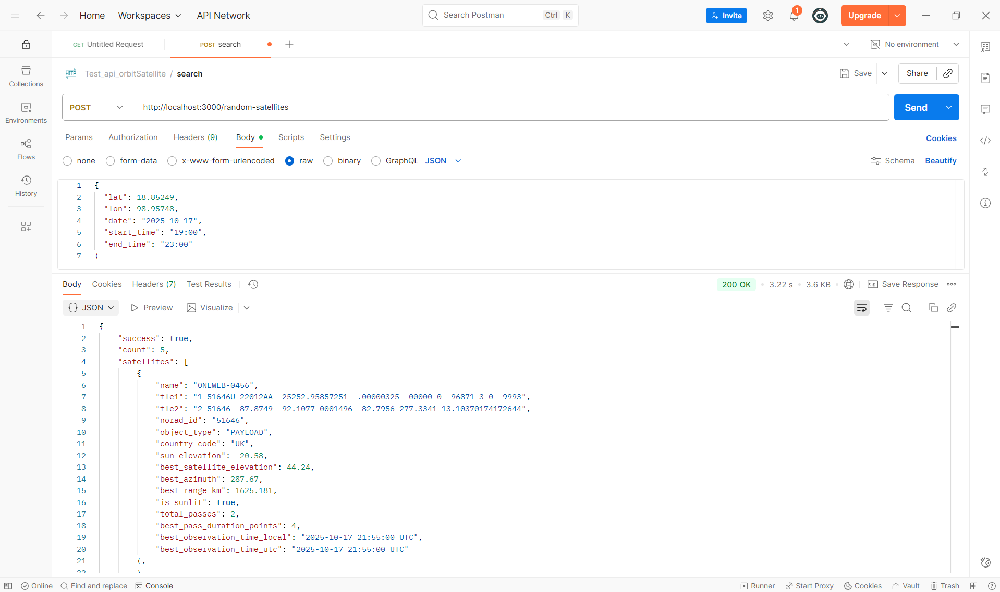

1. คู่มือการใช้งาน
1.1 การกรอกข้อมูล
Latitude (ละติจูด)
หน่วย: Decimal (ทศนิยม)
ช่วงค่า: -90° ถึง 90°
- ค่าบวก (+) = เหนือเส้นศูนย์สูตร (Northern Hemisphere)
- ค่าลบ (-) = ใต้เส้นศูนย์สูตร (Southern Hemisphere)
Chiang Mai: 18.85249
Longitude (ลองจิจูด)
หน่วย: Decimal (ทศนิยม)
ช่วงค่า: -180° ถึง 180°
- ค่าบวก (+) = ทางตะวันออก (Eastern Hemisphere)
- ค่าลบ (-) = ทางตะวันตก (Western Hemisphere)
Chiang Mai: 98.95748
Date (วันที่)
Start Time และ End Time (เวลาเริ่มต้นและสิ้นสุด)
ผู้ใช้สามารถเลือกได้ 2 แบบ:
1) Auto Mode (โหมดอัตโนมัติ) - แนะนำ
- ไม่ต้องกรอก Start Time และ End Time
- ระบบจะคำนวณหาช่วงเวลากลางคืนในวันที่กำหนดให้อัตโนมัติ
- เหมาะสำหรับการมองดาวเทียม เพราะจะคำนวณเฉพาะเวลาที่ท้องฟ้ามืด
2) Custom Mode (กำหนดเวลาเอง)
- กรอก Start Time และ End Time ตามต้องการ
- รูปแบบ: HH:MM (24 ชั่วโมง) เช่น 18:00, 23:30
- ระบบจะคำนวณตามช่วงเวลาที่กำหนด
Search Satellite from Database (ค้นหาดาวเทียมจากฐานข้อมูล)
มี 2 วิธีในการค้นหา:
- ค้นหาจากชื่อดาวเทียม - พิมพ์ชื่อดาวเทียมที่ต้องการ (เช่น ISS, Starlink)
- ค้นหาจาก NORAD ID - ใส่หมายเลข NORAD ID (เช่น 25544 สำหรับ ISS)
Random Satellite (สุ่มดาวเทียม)
การป้อนค่า TLE ด้วยตนเอง
สำหรับผู้ใช้ขั้นสูงที่มีข้อมูล TLE (Two-Line Element) ของดาวเทียม
รูปแบบ: ต้องป้อนให้ครบถ้วนทั้ง 3 บรรทัด
ISS (ZARYA)
1 25544U 98067A 23001.00000000 .00016717 00000-0 10270-3 0 9005
2 25544 51.6442 339.8587 0001449 91.1234 268.9926 15.50103472379345
Selected Satellites Table (ตารางดาวเทียมที่เลือก)
คือตารางรายการดาวเทียมที่คุณเพิ่มเข้ามา ซึ่งผู้ใช้งานสามารถ:
- ดูรายการดาวเทียมทั้งหมดที่เลือกไว้
- ลบรายการที่ไม่ต้องการได้
- ตารางจะแสดงชื่อดาวเทียมที่ได้เลือกไว้
1.2 การแสดงผลลัพธ์
แผนที่ (Map)
แสดงเส้นทางการโคจรของดาวเทียมตั้งแต่เวลาเริ่มต้นจนถึงเวลาสิ้นสุดที่ผู้ใช้ต้องการสังเกตการณ์
สัญลักษณ์บนแผนที่:
 หมุดสีแดง = ตำแหน่งผู้สังเกตการณ์ (Observer Location)
หมุดสีแดง = ตำแหน่งผู้สังเกตการณ์ (Observer Location) สัญลักษณ์ดาวเทียม = ตำแหน่งปัจจุบันของดาวเทียม (แสดงเมื่อเวลาปัจจุบันอยู่ในช่วงเวลาที่คำนวณ)
สัญลักษณ์ดาวเทียม = ตำแหน่งปัจจุบันของดาวเทียม (แสดงเมื่อเวลาปัจจุบันอยู่ในช่วงเวลาที่คำนวณ)- เส้นสีต่างๆ = เส้นทางวงโคจรของแต่ละดาวเทียม (แต่ละดาวจะมีสีต่างกัน)
Ground Track Table (ตารางตำแหน่งดาวเทียม)
เป็นตารางที่แสดงข้อมูลตำแหน่งของดาวเทียม ณ เวลาปัจจุบัน (แสดงเพียงเวลาเดียว)
ความหมายของค่าในตารางคือ:
- Latitude, Longitude - ตำแหน่งที่ดาวเทียมอยู่เหนือพื้นที่ใด เมื่อฉายลงมายังพื้นผิวโลก (Ground Track Position)
- Elevation (km) - ความสูงของดาวเทียมจากพื้นผิวโลก (Altitude above Earth surface)
ปุ่ม "Show All Data"
คลิกเพื่อแสดงตารางข้อมูลตำแหน่งของดาวเทียมในทุกช่วงเวลาที่ผู้ใช้กำหนด (Complete orbital data)
Visibility Graph (กราฟการมองเห็นดาวเทียม)
เป็นกราฟที่แสดงช่วงเวลาที่จะสามารถมองเห็นดาวเทียมได้จากตำแหน่งผู้สังเกตการณ์
ความหมายของสีในกราฟ:
- สีเหลือง = ดาวเทียมโดนแสงอาทิตย์ (มองไม่เห็น)
- สีเทา = ดาวเทียมไม่โดนแสงอาทิตย์ (มองไม่เห็น)
- สีเขียว = สามารถมองเห็นดาวเทียมได้
ความหมายของค่าในตาราง/กราฟ:
- Altitude - มุมที่บอกว่าดาวเทียมอยู่สูงแค่ไหนจากขอบฟ้า (Elevation Angle) หน่วยเป็นองศา
- 0° = อยู่ที่ขอบฟ้า
- 90° = อยู่เหนือศีรษะตรง
- ค่าติดลบ = อยู่ใต้ขอบฟ้า (มองไม่เห็น)
- Azimuth - มุมที่บอกว่าต้องหันไปทิศไหนถึงจะเห็นดาวเทียม (Compass Direction) หน่วยเป็นองศา
- 0° / 360° = ทิศเหนือ
- 90° = ทิศตะวันออก
- 180° = ทิศใต้
- 270° = ทิศตะวันตก
- Distance (km) - ระยะทางตรงจากตำแหน่งผู้สังเกต (Observer) ไปยังดาวเทียม (Slant Range)
- Sun Alt - มุมที่บอกว่าดวงอาทิตย์อยู่สูงแค่ไหน (Sun Altitude) หน่วยเป็นองศา
- ค่าติดลบมาก = ท้องฟ้ามืด (เหมาะแก่การมองดาวเทียม)
- Sunlit - ดาวเทียมโดนแสงอาทิตย์หรือไม่
- Visibility - สามารถมองเห็นดาวเทียมได้หรือไม่
ปุ่ม "Data from Graph"
คลิกเพื่อแสดงข้อมูลรายละเอียดจากกราฟการมองเห็นดาวเทียมในรูปแบบตาราง
ข้อมูลของดาวเทียม (Satellite Information)
แสดงรายละเอียดพารามิเตอร์วงโคจรของดาวเทียมที่เลือก:
- NORAD ID - หมายเลขประจำตัวเฉพาะที่กำหนดให้กับดาวเทียมแต่ละดวง (Catalog Number)
- Orbital Period - ระยะเวลาที่ดาวเทียมโคจรรอบโลกครบ 1 รอบ หน่วยเป็นนาที
- Mean Motion - จำนวนรอบการโคจรต่อวัน (Revolutions per day)
- Velocity - ความเร็วที่ดาวเทียมใช้เคลื่อนที่ หน่วย km/s
- Inclination - มุมเอียงของวงโคจรเทียบกับเส้นศูนย์สูตร หน่วยเป็นองศา
- Epoch - "เวลาอ้างอิง" ที่ข้อมูลวงโคจรทั้งหมดของดาวเทียมในชุดข้อมูล TLE ถูกต้องและแม่นยำที่สุด
2. คู่มือโทเคน (API Token)
2.1 API เปิดให้เข้าถึงอะไรได้บ้าง
ระบบ API ของเราเปิดให้ใช้งาน 3 Endpoints หลัก:
ค้นหาดาวเทียมจากฐานข้อมูล
- ค้นหาจากชื่อดาวเทียม
- ค้นหาจาก NORAD ID
สุ่มดาวเทียมที่สามารถมองเห็นได้ในระยะเวลาที่กำหนดจากฐานข้อมูล
- สุ่มครั้งละ 5 ดวง
- เฉพาะดาวเทียมที่มองเห็นได้จริงในช่วงเวลาที่กำหนด
คำนวณข้อมูลวงโคจรของดาวเทียม
- คำนวณตำแหน่งและวงโคจร
- คำนวณช่วงเวลาที่มองเห็นได้
- แสดงข้อมูลรายละเอียดของดาวเทียม
2.2 Token คือะไร และวิธีการสร้างและจัดการกับ Token
Token คืออะไร?
Token (โทเคน) คือ กุญแจดิจิทัล ที่ใช้ยืนยันตัวตนเมื่อเรียกใช้ API โดยไม่ต้องใส่อีเมลและรหัสผ่านทุกครั้ง เหมือนบัตรผ่านประตูที่ให้คุณเข้าถึงข้อมูลได้โดยอัตโนมัติ
ทำไมต้องใช้ Token?
- 🔐 ปลอดภัยกว่า - ไม่ต้องส่งรหัสผ่านจริงผ่านเครือข่าย
- ⏱️ สะดวก - เขียนโปรแกรมเรียก API ได้โดยไม่ต้อง login ซ้ำ
- 🎯 ควบคุมได้ - สามารถลบหรือปิดการใช้งานได้ทันทีโดยไม่กระทบรหัสผ่าน
- 📊 ติดตามการใช้งาน - ดูได้ว่า Token นี้ใช้งานครั้งล่าสุดเมื่อไหร่
2.3 วิธีการสร้าง Token
-
เข้าไปที่หน้า API Token
ไปที่เมนู "Generate Token" หรือ "API Token" ในระบบ
-
กดปุ่ม "Generate New Token"
คลิกที่ปุ่มสร้าง Token ใหม่
-
ตั้งชื่อให้กับ Token
กรอกชื่อที่จะช่วยให้คุณจำได้ว่า Token นี้ใช้สำหรับอะไร (เช่น "My Python Script", "Mobile App")
-
กดปุ่ม "Generate Token"
ยืนยันการสร้าง Token
-
คัดลอกและเก็บ Token ให้ปลอดภัย
⚠️ สำคัญมาก! อย่าแชร์ Token ให้ผู้อื่น
การจัดการ Token
Token ที่ถูกสร้างจะแสดงอยู่ในตารางพร้อมข้อมูล:
- ชื่อ Token - ชื่อที่คุณตั้งไว้
- วันที่สร้าง - เมื่อไหร่ที่สร้าง Token
- วันหมดอายุ - Token จะหมดอายุเมื่อไหร่
- ใช้งานครั้งล่าสุด - เมื่อไหร่ที่ใช้ Token นี้ครั้งล่าสุด
- สถานะ - Active (ใช้งานได้) หรือ Expired (หมดอายุ)
วิธีใช้ Token เรียก API
ใส่ Token ใน Authorization Header ของ HTTP Request:
ตัวอย่างการเรียกใช้ API
การลบ Token
หาก Token หมดอายุหรือไม่ใช้งานแล้ว สามารถลบได้โดย:
- ไปที่หน้า API Token
- คลิกปุ่ม "Delete" ที่ Token ที่ต้องการลบ
- ยืนยันการลบ
- Token จะถูกยกเลิกทันที และไม่สามารถใช้งานได้อีก
- สร้าง Token แยกสำหรับแต่ละโปรเจค
- ตั้งชื่อ Token ให้บอกวัตถุประสงค์ชัดเจน
- ลบ Token ที่ไม่ใช้งานแล้วเพื่อความปลอดภัย
- สร้าง Token ใหม่ก่อนที่ Token เก่าจะหมดอายุ